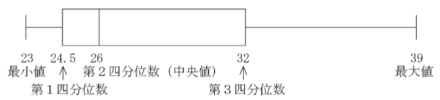

文部科学省の四分位数の定義は，Excel（2通り）やR（9通り＋1）のどれとも異なる。オレオレ定義が悪いわけではないが，これ以外を×にする先生が現れないことを望む。
平成29年（2017年）告示の中学校学習指導要領の数学では，「資料の活用」が「データの活用」と改称された。2年生の「データの活用」では「四分位範囲や箱ひげ図の必要性と意味を理解すること」「四分位範囲や箱ひげ図を用いてデータの分布の傾向を比較して読み取り，批判的に考察し判断すること」という文言が新しく入った。これは今まで高校「数学I」で扱われていた内容である。
文科省は学習指導要領解説も公開している。こちらは法的拘束力はないが，教科書の著者たちは，文科省の意図に沿う教科書を作るため，これを熟読することになる。
中学校学習指導要領解説の数学編には，箱ひげ図・四分位数・四分位範囲について次のように記されている（pp.120-121）：
箱ひげ図とは，次のように，最小値，第1四分位数，中央値（第2四分位数），第3四分位数，最大値を箱と線（ひげ）を用いて一つの図で表したものである。四分位数とは，全てのデータを小さい順に並べて四つに等しく分けたときの三つの区切りの値を表し，小さい方から第1四分位数，第2四分位数，第3四分位数という。第2四分位数は中央値のことである。なお，四分位数を求める方法として幾つかの方法が提案されているが，ここでは四分位数の意味を把握しやすい方法を用いる。
例えば，次の九つの値があるとき，中央値（第2四分位数）は5番目の26である。
23 24 25 26 26 29 30 34 39
この5番目の値の前後で二つに分けたときの，1番目から4番目までの値のうちの中央値24.5を第1四分位数，6番目から9番目までの値のうちの中央値32を第3四分位数とする。
 箱ひげ図の箱で示された区間に，全てのデータのうち，真ん中に集まる約半数のデータが含まれる。この箱の横の長さを四分位範囲といい，第3四分位数から第1四分位数を引いた値で求められる。上の例では四分位範囲は32−24.5=7.5である。四分位範囲はデータの散らばりの度合いを表す指標として用いられる。極端にかけ離れた値が一つでもあると，最大値や最小値が大きく変化し，範囲はその影響を受けやすいが，四分位範囲はその影響をほとんど受けないという性質がある。また，この図中に，平均値を記入して中央値との差を考えたり，第1四分位数や第3四分位数と中央値との差を考えたりすることにより，データの散らばり具合が把握しやすくなるので，複数のデータの分布を比較する場合などに使われる。
つまり，9個の数を小さい順に並べたとき，最小値・第1四分位数・中央値（メジアン＝第2四分位数）・第3四分位数・最大値はそれぞれ1個目・3個目・5個目・7個目・9個目ではなく，1個目・2.5個目・5個目・7.5個目・9個目とせよということである。
四分位数は，一つ前の学習指導要領で高校「数学I」に入った。上の四分位数の定義は，そのときの文科省による教科書会社への説明会で示されたものらしい。数研通信78号（2014年1月）には次のように書かれている：
Q.2 教科書に「四分位数の定義は他にもいくつかある」とあるように，四分位数の定義は教科書に書いてあるものだけではありません。いくつもある四分位数の定義の中で，この定義を教科書に載せたのはなぜでしょうか。
Ans.2 データを値の大きさの順に並べたとき，4等分する位置の値を四分位数と呼びますが，データの個数を4で割った余りの違いで，「4等分する位置の値」が単純には決まりません。そのため，四分位数にはいろいろな定義があります。
教科書の編集が始まる前に，四分位数の定義については教科書会社から文部科学省に質問をしていました。それについて文部科学省が提示した定義は次のようなものでした。
「データを小さい方から大きい方まで並べてメジアンをとる。そのメジアンを落として，メジアンより小さいデータのまたメジアンをとってそれを第一四分位数とする。メジアンより大きいデータのまたメジアンをとってそれを第三四分位数とする。」
このため，各社の教科書は一様にこの回答に沿った定義となっています（もちろん教科書ごとに表現の違いはあります）。
文部科学省がこの定義を提示した理由に「これが一番簡単な定義である」ということがあったようです。なお，学習指導要領や学習指導要領解説には，四分位数の詳しい定義は載っていません。教科書の定義はExcelの定義とも違いますが，データの数が多いときには，その後の考察にはほとんど影響がありません。データの分析では，代表値などの値を求めた「その後の考察が大事」ですので，四分位数の求め方が複数あることについては授業では軽く触れる程度でよいのではないかと思います。
箱ひげ図を考案したTukeyは，第1四分位数・第3四分位数を「ヒンジ」（hinges）と呼び，両端の値とヒンジと中央値を合わせて五数要約（five-number summary）と呼んでいる（John W. Tukey, Exploratory Data Analysis (Addison-Wesley, 1977), p.33）：
つまり，奇数個の場合は，真ん中の要素も含めた下半分（最小値から中央値まで）の中央値が下ヒンジで，真ん中の要素も含めた上半分（中央値から最大値まで）の中央値が上ヒンジである。偶数個の場合は，真ん中の要素がないので，文科省の定義と同じになる。したがって，9個であれば1個目・3個目・5個目・7個目・9個目が五数要約になる。
この五数要約に基づいて箱ひげ図（box-and-whisker plot）を描くわけだが，Tukeyはさらに外れ値を個別に点で表し，箱ひげ図の「ひげ」は，外れ値でない部分の両端まで描くことを推奨している。ここでは外れ値については考えないことにする。
Excelには四分位数を求める関数 quartile があった。最近のExcelではこれが quartile.inc と quartile.exc に分かれた。quartile.inc は従来の quartile と同じである。冒頭の文科省の例で試してみよう：
quartile(範囲,0) 〜 quartile(範囲,4) はそれぞれ9個の数の1個目・3個目・5個目・7個目・9個目を取り出す。quartile.inc も同様である。quartile.exc は9個の前後に一つずつ空の値を補って11個にしてから quartile.inc を実行する。したがって quartile.exc(範囲,0) と quartile.exc(範囲,4) は存在せず，quartile.exc(範囲,1) 〜 quartile.exc(範囲,3) はたまたま文科省の定義通りになる。個数によっては，文科省の定義通りにならない。
ちなみに，Excelの quartile.inc(*,0) 〜 quartile.inc(*.4) の正確な定義は，$x[1] \leq x[2] \leq \ldots \leq x[n]$ について，それぞれ $x[1]$, $x[(n+3)/4]$, $x[(n+1)/2]$, $x[(3n+1)/4]$, $x[n]$ である。quartile.exc(*,1) 〜 quartile.inc(*.3) はそれぞれ $x[(n+1)/4]$, $x[(n+1)/2]$, $x[3(n+1)/4]$ である。ただし，引数が整数にならない場合は，前後の値から線形補間して求める。
この定義は，前後の値を $1:3$ に内分するといった操作が必要になるので，中学生には難しいかもしれない。
RにはTukeyの定義通りの fivenum(x, na.rm=TRUE) という関数がある：
fivenum(c(23, 24, 25, 26, 26, 29, 30, 34, 39))
[1] 23 25 26 30 39
また，一般の分位数を求める quantile(x, probs=seq(0,1,0.25), na.rm=FALSE, names=TRUE, type=7, ...) もある。デフォルトでは四分位数を返す：
quantile(c(23, 24, 25, 26, 26, 29, 30, 34, 39))
0% 25% 50% 75% 100%
23 25 26 30 39
これはExcelの quartile.inc と同じである。ただし，これは quantile() の引数 type がデフォルトの 7 の場合で，type には 1 から 9 までの整数が与えられる（つまり9通りのタイプがある）。詳しくはRのコンソールで ?quantile と打ち込んで出るヘルプを参照されたい。このどれも文科省の定義と異なる。
ちなみに，Excelの quartile.exc はタイプ 6 の定義（SPSSの定義）であるが，Excelでは第0・第4四分位数は未定義である。
できればTukeyの定義か，Excelの quartile.inc の定義を採用してほしかったが，どの定義を採用しても，データの個数が十分大きい場合は，結果にほとんど関係しない。文科省の定義以外を×にする先生が現れないことを望む。
四分位数と四分位群：複数定義と用語の区別，その歴史というサイトを教えていただいた。
わたやん氏のスライドで言及されている Madhuri S. Mulekar, Cracking the AP Statistics Exam, 2010 Edition (The Princeton Review, 2009), p.67 ではRの type=6 を使っているようだ。具体的には $k$-th percentile は小さい方から $l = (n+1)k/100$ 番目の値と書いてあり，$l$ が整数でない例では前後から補間している。
Wikipedia の Quartile に載っている最初の方法（TI-83 電卓の方法）がまさに文科省定義であると教えていただいた。これは Moore and McCabe の定義と呼ばれるものである（この記事参照）。